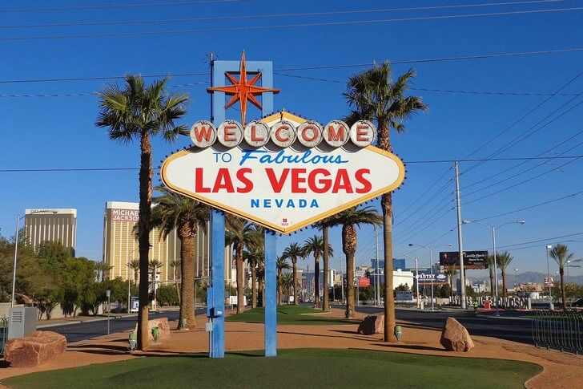

Лас-Вегас
Лас-Ве́гас — город на западе США, в штате Невада, административный центр самого южного в штате округа Кларк. Город расположен в центральной части пустыни Мохаве. Согласно переписи населения 2010, его население — 596 424 жителя, а всего в агломерации Лас-Вегаса постоянно проживало 1 951 269 человек. Лас-Вегас является одним из крупнейших мировых центров развлечений и игорного бизнеса. Популярные места визитов — казино, отели, ежедневные концерты и шоу. Всего на территории Лас-Вегаса сосредоточено более восьмидесяти казино, несколько тысяч игровых павильонов, множество фешенебельных отелей. Основные казино и отели расположены в историческом центре города вдоль улицы Фримонт-стрит в Даунтауне, а также в нескольких милях южнее на Лас-Вегас-бульваре — центральной улице города, идущей с севера на юг, самую оживлённую часть которой называют Лас-Вегас-Стрип.
Добро пожаловать в Лас-Вегас
Знак «Добро пожаловать в сказочный Лас-Вегас»
Первое, что видит турист, въезжающий в город через Лас-Вегас-Стрип, – это знаменитый приветственный знак, который сверкает яркими огнями и как бы сулит гостям незабываемые впечатления и веселые приключения. Вывеска была установлена в 1959 году. Ее дизайн в популярном в середине XX столетия стиле гуги разработал Б. Уиллис. С 2009 года знак входит в Национальный реестр исторических мест США.
Лас-Вегас-Стрип

Лас-Вегас-Стрип
Лас-Вегас-Стрип – центральная аллея и сердце города, где находятся знаменитые казино (в том числе легендарный Дворец Цезаря) и шикарные отели. Каждое здание на этой улице можно рассматривать как буйный всплеск архитектурной фантазии создателей: здесь есть копия Эйфелевой башни и Бруклинского моста, Египетская Пирамида и фигура Сфинкса, средневековый замок и другие грандиозные постройки.
Отель-казино «Wynn»
Отель-казино «Wynn»
«Wynn» был назван в честь миллиардера Стива Винна, который заработал состояние с помощью игорной индустрии. Комплекс состоит из 60 этажей, что делает его одним из самых высоких в Лас-Вегасе. Помимо отеля и игорной зоны здесь есть дилерский центр автомобилей «Maserati», «Ferrari», «AstonMartin» и других «люксовых» марок. Интерьер комплекса украшают произведения искусства из личной коллекции С. Винна.